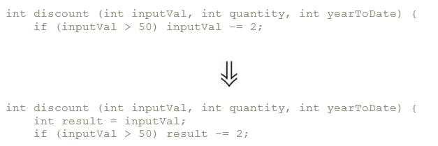
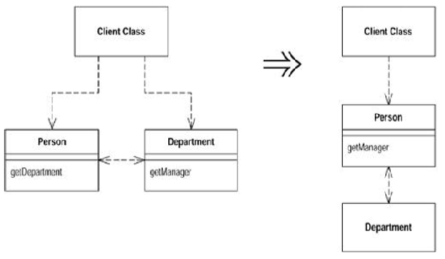
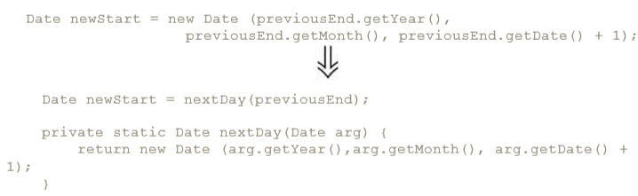
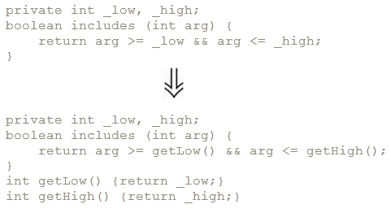
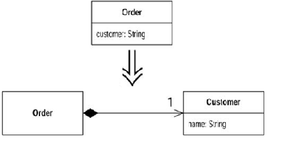
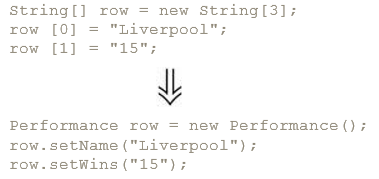

You have a code fragment that can be grouped together. Turn the fragment into a method whose name explains the purpose of the method.
Replace all method calls with the body of method and delete method. Use whan too much indirection.
You are using a temporary variable to hold the result of an expression. Extract the expression into a method. Replace all references to the temp with the expression. The new method can then be used in other methods.
Put the result of the expression, or parts of the expression, in a temporary variable with a name that explains the purpose. Usually can be replaced with Extract method.
You have a temporary variable assigned to more than once, but is not a loop variable nor a collecting temporary variable. Make a separate temporary variable for each assignment.
i = i + some expression // collecting variable

Pass by value and pass by reference problem.
You have a long method that uses local variables in such a way that you cannot apply Extract Method. Turn the method into its own object so that all the local variables become fields on that object. You can then decompose the method into other methods on the same object. Give the new class a final field for the object that hosted the original method and constructor that receives this object.
Replace the body of the method with the new clearer algorithm.
A method is using more features of another class than the class on which it is defined.
A field is used by another class more than the class on which it is defined.
You have one class doing work that should be done by two.
A class isn't doing very much.
A client is calling a delegate class of an object. Create methods on the server to hide the delegate. Motivation - advantages of encapsulation.

Opposite to hide delegate. Motivation - too much methods are delegated.
A server class you are using needs an additional method, but you can't modify the class.

A server class you are using needs several additional methods, but you can't modify the class. Create a new class that contains these extra methods. Make this extension class a subclass or a wrapper of the original.



Make public field private and provide accessors.
Method returns a collection. Provided methods: